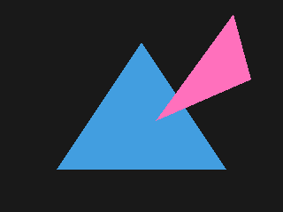

Triangle: Interpolation
In the last few articles, we manually rendered triangles using nothing but math, and we exported the final image to a PNG file. Here's what we had at the end:
This is great, but wouldn't it be cool if we could have different colors for each vertex, and blend between them? Not just color, but anything else, like normal vectors, positions, or texture coordinates! Yes, we're getting closer to texturing, so be excited.
Let's modify our Triangle class to store different colors for
every vertex.
class Triangle:
v0: Vec2
v1: Vec2
v2: Vec2
v0_col: Color
v1_col: Color
v2_col: Color
def __init__(
self,
v0: Vec2,
v1: Vec2,
v2: Vec2,
v0_col: Color,
v1_col: Color,
v2_col: Color
) -> None:
self.v0 = v0
self.v1 = v1
self.v2 = v2
self.v0_col = v0_col
self.v1_col = v1_col
self.v2_col = v2_col
...Let's update the triangle list to account for the changes we just made. We'll also get rid of the second triangle to keep things simple for now.
# triangle list
tris: list[Triangle] = []
tris.append(Triangle(
v0=Vec2(256, 48),
v1=Vec2(160, 192),
v2=Vec2(64, 48),
v0_col=Color(1, .2, .1),
v1_col=Color(.2, 1, .1),
v2_col=Color(.1, .2, 1)
))Now, we need to update the render code to somehow interpolate the color. We'll also remove some redundant comments.
for y in range(HEIGHT):
for x in range(WIDTH):
p = Vec2(x + .5, y + .5)
col = Color(.1, .1, .1)
for tri in tris:
bary: Vec3 = tri.cart_to_bary(p)
if bary_is_outside(bary):
continue
# TODO: interpolate the color
idx = icoord_to_idx(x, HEIGHT - y - 1, WIDTH)
buf[idx] = colIt's Barycentric, Again
It turns out we have everything we need for interpolating values between the
vertices of a triangle. If b0, b1, and
b2 are our Barycentric coordinates, and a,
b, and c are the data on the vertices, we can blend
between them by scaling each data value by its corresponding Barycentric
coordinate, and adding them up:
interpolated = (b0 * a) + (b1 * b) + (b2 * c)
This makes sense, because if b0 is 1, then we know that
p is exactly on v0. If b1 is 1, then
p is on v1, and so on. If p is at the
center of the triangle, the three smaller triangles we get by drawing line
segments from each vertex to p, occupy the same proportion of
area in relation to the larger triangle, and since they add up to 1, we get
(1/3, 1/3, 1/3) as our Barycentric coordinates, meaning the three data values
will be averaged out.
It's important to keep in mind that a, b, and
c can be either scalars or vectors of any dimension, but
b0, b1, and b2 are always scalars.
Though, when combined, they make a 3D vector, but I digress. What this means
is that we can blend colors, positions, single scalar numbers, or anything we
want. In this case, we want to blend colors.
Back in the render code, we'll update the loop that goes through the triangle list.
for y in range(HEIGHT):
for x in range(WIDTH):
...
for tri in tris:
bary: Vec3 = tri.cart_to_bary(p)
if bary_is_outside(bary):
continue
col = (Vec3.scalar(bary.x) * tri.v0_col) \
+ (Vec3.scalar(bary.y) * tri.v1_col) \
+ (Vec3.scalar(bary.z) * tri.v2_col)
...RGB Triplets Are Vectors in Disguise
Did you see it? There's a huge problem with the code above. We're trying to
multiply a Vec3 by a Color, which is an entirely
separate class. We've talked about how we can treat RGB triplets as 3D
vectors, and how it's easier to not have separate classes for structures that
can be represented as vectors. Let's get rid of the Color class
entirely, and use Vec3 instead. You can use the "find and
replace" feature of your code editor to replace any occurance of
Color with Vec3. Make sure it's case sensitive. If
you're using VS Code, you need to enable the "Match Case" option. We're almost
there. In the loop where we fill the RGB8 buffer, we need to use
col.x/y/z instead of col.r/g/b.
# RGB8 buffer
buf_rgb8: list[tuple[int, int, int]] = []
for i in range(N_PIXELS):
col: Vec3 = buf[i]
buf_rgb8.append((
int(col.x * 255),
int(col.y * 255),
int(col.z * 255)
))And, we're done! If we rerun the script, this is what we'll get:
In the next article, we'll render a texture onto a quad made up of two triangles.